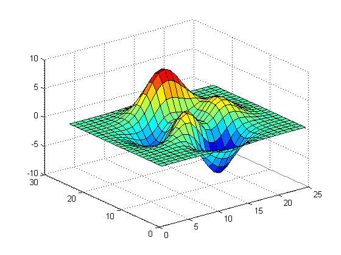
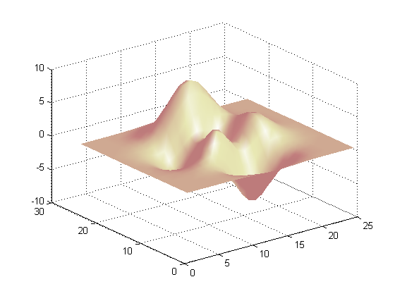
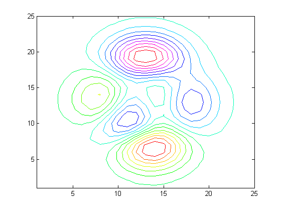
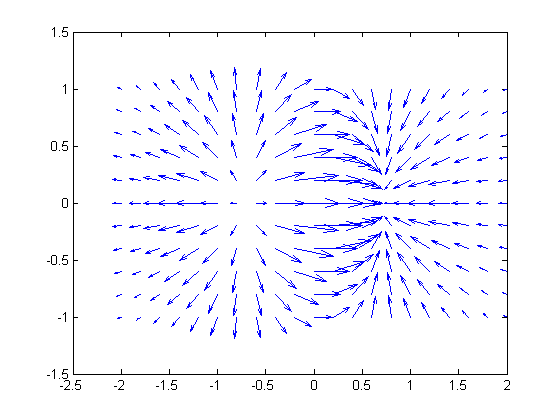

3 次元プロット
ここでは、MATLAB® の表面プロットのいくつかの例を示します。
目次
PEAKS のメッシュ プロット
z=peaks(25); mesh(z); colormap(hsv)

PEAKS の表面プロット
z=peaks(25); surf(z); colormap(jet);
PEAKS の (シェーディング付き) 表面プロット
z=peaks(25);
surfl(z);
shading interp;
colormap(pink);
 PEAKS の等高線図
z=peaks(25); contour(z,16); colormap(hsv)
Quiver プロット
x = -2:.2:2; y = -1:.2:1; [xx,yy] = meshgrid(x,y); zz = xx.*exp(-xx.^2-yy.^2); [px,py] = gradient(zz,.2,.2); quiver(x,y,px,py,2);
スライス プロット
[x,y,z] = meshgrid(-2:.2:2,-2:.25:2,-2:.16:2);
v = x.*exp(-x.^2-y.^2-z.^2);
xslice = [-1.2,.8,2]; yslice = 2; zslice = [-2,0];
slice(x,y,z,v,xslice,yslice,zslice)
colormap hsv